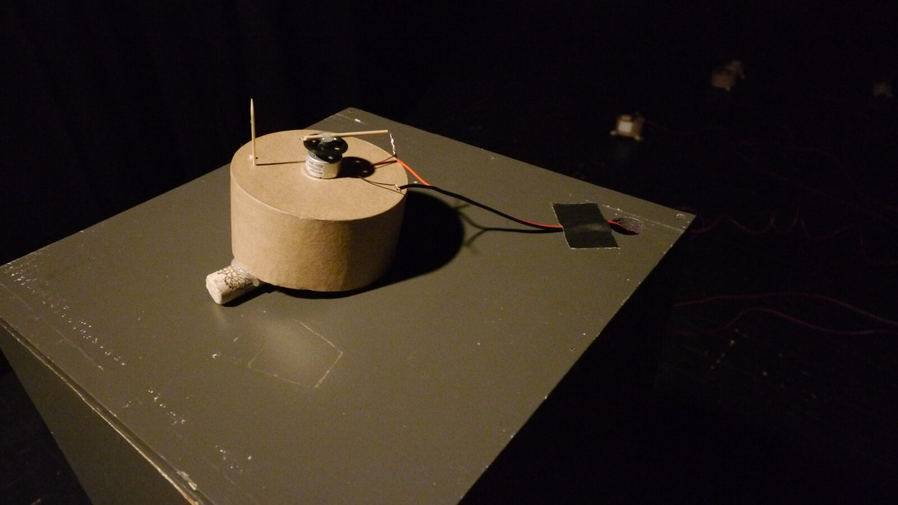
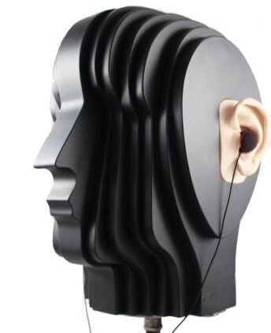
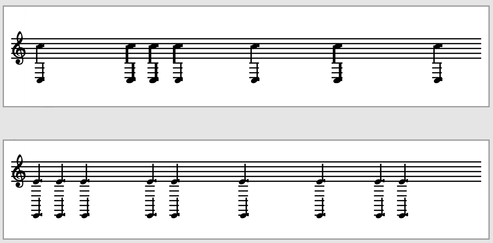

RhumbLine: Plectrohyla Exquisita --- Spatial Listening of Zoomorphic Musical Robots
Abstract
Contending with ecosystem silencing in the Anthropocene, RhumbLine: Plectrohyla Exquisita is an installation-scale instrument featuring an ensemble of zoomorphic musical robots that generate an acoustic soundscape from behind an acousmatic veil, highlighting the spatial attributes of acoustic sound. Originally conceived as a physical installation, the global COVID-19 pandemic catalyzed a reconceptualization of the work that allowed it to function remotely and collaboratively with users seeding robotic frog callers with improvised rhythmic calls via the internet—transforming a physical installation into a web-based performable installation-scale instrument. The performed calls from online visitors evolve using AI as they pass through the frog collective. After performing a rhythm, audiences listen ambisonically from behind a virtual veil and attempt to map the formation of the frogs, based on the spatial information embedded in their calls. After listening, audience members can reveal the frogs and their formation. By reconceiving rhumb lines—navigational tools that create paths of constant bearing to navigate space—as sonic tools to spatially orient listeners, RhumbLine: Plectrohyla Exquisita functions as a new interface for spatial musical expression (NISME) in both its physical and virtual instantiations.
Author Keywords
robot, rhythm, HCI, HRTF, sound spatialization
CCS Concepts
•Human-centered computing → Interaction design ; Systems and tools for interaction design •Information systems → Artificial Intelligence;
Introduction
RhumbLine: Plectrohyla Exquisita (RLPE) is an installation-sized systematic instrument contending with ecosystem silencing in the Anthropocene[1][2][3] by emphasizing the spatial properties of acoustic sound and the bodies that produce them. Portending a dystopic future in which acoustic ecology is encountered only through the mechanical reproduction of environmental soundscapes, the interactive audio of our installation is created by a chorus of robotic frogs—a recognition of the catastrophic global population collapse amphibians are facing [4].
RLPE leverages the acousmatic listening experience—listening to a sound whose source is unseen—to highlight the spatial attributes of acoustic sound and organize them for expressive purposes[5]. As an interactive installation-instrument, its focus on spatial sound allows it to function as a new interface for spatial musical expression (NISME) [6] with a hybrid acoustic/digital framework. Although the acousmatic experience is fundamental to RLPE, it also critiques one of the fundamental conditions of acousmatic music. Acousmatic methods often conceal the labor and technology needed to produce the act of veiling upon which acousmatic experience depends [7]. In this work, a chorus of robotic frogs on the bank of an imaginary pond creates an acoustic soundscape from behind an acousmatic veil, which shields their view from the listener. The conspicuous veil deployed in this installation critiques the practice within acousmatic music of concealing the labor required to create the acousmatic experience itself. When experienced in person, the veil is made of black speaker cloth that is visually opaque but acoustically transparent; for the interactive telematic version, the veil becomes a technological shielding of the visual signal.
This instrument/installation invokes rhumb lines to incorporate the physio-spatial attributes of sound—attributes that are often discarded in acousmatic music [8]. Rhumb lines are historic cartographic tools of oceanic navigation which rely on true or magnetic north to establish a constant bearing. In this installation, spatial sound becomes the bearing; visitors focus on the spatial properties of acoustic sound to engage in a form of sonic navigation. In the telematic version, audiences use a mouse to perform a short rhythm that is then performed by a specific robotic frog. This rhythmic seed is then sent to the on-site computer and evolved using AIs. When two or more frogs have been activated, we multiply the rhythms to get two new resultant rhythms. Analysis of the original rhythm determines how quickly a rhythm gets sent to the next frogs, the direction the signal passes, how many frogs will play a signal from the seed, and the amount of evolution allowed by each AI.
The first section of this paper discusses the construction of the robotic amphibians that constitute RLPE and situates them in the history of musical robotics. The second section describes the in-person experience, which asks visitors to record their individual listening experiences by drawing sound maps. The third section details how the original physical installation was adapted to function remotely, allowing RLPE to evolve from a sound installation to an interactive networked installation-instrument system with an embedded ambisonic listener. The fourth section describes the artificial intelligence that generates the chorus of robotic frog calls from user input. The paper concludes with comments regarding the future of the RLPE project and its broader interactions with acoustic ecology and environmental activism.
Frog Construction
RLPE features 19 zoomorphic spindle-motor “frogs” that mimic the sound produced by frog guiro/rasp idiophones. Each frog has one harvested DC DVD spindle motor with an affixed plectrum that scrapes wooden dowels built in to the body of the instrument, composed of lightweight paperboard. The scraping of the plectrum against the dowels produces the characteristic “croak” of a frog guiro. Each frog as two feet to elevate the open end of the paperboard body away from the surface one which the frog rests, allowing the body to function as a resonance chamber and amplify the sound of the frog’s call. While the contemporary field of musical robotics is subdivided by typologies of anthropomorphic robots, musical automata, and robotic instrumental arrays designed to feature the unique capabilities of robotic performers [9], RLPE is unique in its deployment of zoomorphic musical robots who interact with—and comment upon—human ecology.
Building on the legacy of MIDI-driven musical robotics [10][11][12][13], each frog in RLPE is connected via a DC-power cable to one of 12 ports on one of 2 Dadamachines ”automat” motor controllers that process MIDI signals [14]. The frogs are activated by a Max/MSP patch [15] that sends a MIDI “call” to one frog, which then cascades through the instrument system. In the internet installation, calls are initiated by audience members via the internet, described in greater detail in the following section.
Each frog is hand-crafted to ensure a variety of timbres using a variety of different design variables, including the size of the body (a round box), the number or type of dowels, the positions of the dowels, and the density of the plectra. In addition to these descrete analog sounding materials, interaction with the frogs over the course of the exhibition causes changes in timbre as sounding materials get pushed out of place through the physical act of sound production and motors die. The curator is instructed to manually adjust the dowels and plectra when rearranging the frogs, but not replace the burnt out motors. We also have burnt out ports on the Dadamachines, decreasing the number of playable frogs without investing in new hardware. We are still determining the algorithm for engaging in repair of the installation; the decreasing number of sounding instruments is a serendipitous analog to the decline of amphibious populations [4].


Fig. 1. Close-up of robotic frog guiro
In Person Installation Experience
In the in-person installation, there are multiple stations and experiences for the audience: 1) entering a door into a small corridor defined by a wall on one side and an acoustically transparent veil on the other; 2) triggering an underfoot pressure sensor that initiates the robotic frog sequence; 3) listening for the shape of the frogs’ formation as suggested by the spatial properties of their calls; 4) drawing the shape of their formation around their imaginary pond; 5) walking behind the veil to see the actual shape of the frogs’ formation; 6) displaying their drawing (i.e., sound map) on the wall behind the curtain ; 7) observing and triggering a single frog at eye level.
Using philosopher Edward Casey’s concept of artworks as a map-form [16], in-person audiences are invited to interact with the installation as sonic surveyors, drawing maps “with/in” their individual experiences of the acousmatic image by plotting the perceived locations of the frogs and using sound as a sonic-spatial bearing. Only then are they allowed to pass behind the veil. Curators change the shape of the pond every day, encouraging multiple visits. Visitors are asked to display their sound maps by attaching them to directly to the veil that shields the frogs from view, which causes an anthropocenic coloring of the sound as layers of drawings slowly accumulate and muffle the frogs the longer the installation is active. In the physical installation, approximately 50% of visitors were able to accurately map the gestalt of the frogs’ formation.
In NIME literature, mapping often refers to how correspondence is established between the input of a system and the audiovisual output. In our ecologically inspired work inspired by physical mapping, we also took an ecological view on mapping that “takes into account a wider scope of the original action, including aspects which are non-technical but rather psychological and perceptual and are more closely related to a given socio-cultural context and the perceptual or cognitive aspects of expressing musical intentions through digital means[17].” The perspectival sound maps produced by RLPE visitors reify the complex psychological, phenomenological, and perceptual aspects of spatial listening and project them materially onto a page that becomes part of the installation itself.
Video documentation of the original installation can be found at https://tinyurl.com/rhumbline.
Porting to the Internet
The 2019 global pandemic imposed several challenges. How could audiences experience the installation via the internet? How would they engage in spatial listening in a virtual environment? These challenges not only produced a platform that allows more people to access the installation, they led to adaptions that allowed RLPE to transform from a physical sound installation to a globally accessible interactive networked installation-instrument system with an embedded ambisonic listener. The piece evolved, and when we are allowed to have in-person exhibitions again, we will keep the internet connectivity because of the global interactivity an online component permits.
With the telematic version, we wanted to create an interactive experience and to keep the same sense of enchantment [18] as the in-person experience. The virtual environment that the robotic frogs currently inhabit, divided into two primary web pages, invites visitors to become members of an online ecosystem. The first page creates an acousmatic listening experience in which the frogs are heard but veiled from view. The first page contains an array of 18 buttons representing the individual frogs (but not in their actual physical formation). The audience is invited to click a button on the webpage in an improvised rhythmic pattern lasting 5 seconds or less. This rhythm is sent to the host computer connected to the Dadamachines automats and frogs through Collab-Hub [19], a server-based internet connectivity tool. The timing of the signal is not completely precise because of latency and packet loss; however, users are able to identify the performance of their own rhythm. The audience member’s rhythm is played by the selected frog and then sent to at least four frogs in turn before the rhythm begins evolving through AI. The web server is aware of each connected audience member, and as one member clicks on a particular button, the same button becomes non-interactable for all other connected audience member. After the 5-second window, that button becomes interactable again for all users. We send a live audio feed out to the web from in-ear mics on a Soundman Dummy Head mounted on a stepper motor. Due to head related transfer functions, if listeners are wearing headphones, they get an accurate 3D image of the sonic environment [20]. On the first page audiences can seed rhythms and listen to the results. Visitors use the spatial audio on this page to imagine the shape of the frog’s formation and are encouraged to draw a sound map of the perceived shape at home. The web-installation does not currently have the ability to host visitor-produced sound maps because we know we will need to filter/censor the images. Once an audience member is satisfied with the audio-in-itself [21] experience, they can advance to the second page and see a live visual stream of the installation.
The second page allows visitors to peer behind the acousmatic “veil” that occludes the sound source from the visual field, see the robotic frogs, and control the listening experience of other visitors. We use two cameras for the live stream—an overhead view of the entire installation giving the shape of the pond and a second close-up view of a single frog. There is a button under this close-up feed which triggers a slow scrape for the camera on frog 19; this input is not sent to the other frogs through the AI system, but it is still heard on the live feed. Using a dial on the second webpage, listeners are also able to rotate the Soundman Dummy Head 180 degrees in the horizontal plane. If multiple listeners send commands to the dial, the input is averaged; we smooth the signal to ensure that the motor is not stressed. Unlike the physical installation where visitors listen from outside the “pond” behind an acoustically transparent veil, internet listeners are embedded inside the pond vis-à-vis the Soundman head, instead of on the banks, making it easier to determine the pond’s shape. Combining binaural sound with the power to adjust the listening experience by turning the Soundman head gives visitors agency over their spatially-rich listening experience—as with physical environments—and allows them to construct “sound narratives” as they move through virtual space [22] and pursue virtual sonic explorations of place [23].


Fig. 3. Soundman Dummy Head with In-Ear Microphones
Moving RLPE online allowed it to transcend its origins as a physical sound installation. It now has the capacity to function as a rhizomatic multiplayer instrument that can be played simultaneously by a global ensemble of visitors, constructing a networked ecology of sounds in real-time in collaboration with AI and automation. Networking these technologies creates an analog facsimile of the natural world, engaging solo and collaborative performances that leverage the spatial properties of sound for expressive purpose.
Existing between an installation and an instrument, this work was created collaboratively and engages multiple performers/listeners, forming “a system that includes external factors such as genre, historical reception, sonic context and performance scenarios[24].” RLPE’s ecological underpinnings, and the multiple processes by which players engage with it, positions this installation-instrument to advance critical questions about what makes a musical instrument “good” and what a musical instrument is [25].
Rhythmic Evolution through AI
From a very simple input we generate a complex soundscape through AI-driven rhythmic evolution. We take rhythmic inputs from human users and mutate them based on a variety of parameters. We create a system where motifs entered by the user develop their own fitness and lifespan—a genetic algorithm that allows the frogs to manipulate and morph the users’ calls. This AI is constructed in the visual programming language Max, using Bach and Cage, tools for computer-aided composition (CAC) created by Daniele Ghisi and Andrea Agostini [26].
Each user is given a 5-second window to interact via click (or tap, on a touch screen) on a frog of their choosing. Each click initiates a bang in Max, recorded as a rhythm in a bach.roll on the frog’s corresponding MIDI note. The bach.roll object allows for high accuracy recording because it notates rhythms based on actual temporal markers (milliseconds) rather than quantized, metric features (as is done in the bach.score object).
Immediately following the user’s input, the rhythm is iterated through the system 18 times. These 18 iterations correspond with the 9 frogs clockwise and counterclockwise from the initial frog (as arranged on the website)—and so the MIDI note is transposed accordingly (with an added note 15ma or 15mb to ensure the pattern continues when it reaches the higher or lower extreme of the MIDI outputs). The further the iteration from the original frog, the more denatured the rhythm becomes. The rhythm is repeated strictly by the closest 1-4 frogs, with certain sections of the rhythm reordered by the next 1-4 frogs, followed by the granulation of certain sections of the rhythm by the final 1-4 frogs.


Fig. 4. Example of an inputted rhythm in a bach.roll object and the 8th iteration of its rhythmic evolution.
Analysis of the timing of the inputted clicks determines how quickly the rhythm gets sent to the next frog (between zero and 5 seconds based on the total number of clicks), the direction the signal passes (clockwise or counterclockwise based on the how many clicks are in each half of the five second), how many frogs repeat the rhythm strictly (based on how “regular” the initial pattern is), and how many frogs will reorder or granulate the rhythm (based on the shortest rhythmic unit), as well as the size of the sections that are reordered/granulated (based on how symmetrical the original pattern is).
Future Work
Future internet iterations will incorporate audience-produced sound maps, along with an efficient method for vetting and compiling them, and a gallery attendant will print and post images from the web to the in-person exhibit to reincorporate the anthropogenic aspect of the installation. We also plan a research project investigating the spatial verisimilitude of sound maps produced by in-person and virtual listeners. The new rhythmic interface will be added to the in-person experience, and the pressure sensor will be removed. RLPE will become the first in an ongoing series of works that combine spatial listening, AI, telematic performance, mapping, and acoustic ecology in the Anthropocene.
Conclusion
Navigation and mapping depend on acts of projection to interpret perceptual information and create meaning within our social, virtual, and natural environments. RhumbLine: Plectrohyla Exquisita is an analogue for this ecology of projections, where communal meaning is created from listener input and becomes more vivid in its mounting complexity. When presented telematically, additional layers of projection occur with rhythmic evolution through AI and creative interaction by a community of virtual participants. Just as a compass deviates because of local magnetic fields, the sound maps we imagine become as unique as the listeners who experience the sounds themselves.
Citations
- ↩Jaramillo-Legorreta, A., Cardenas-Hinojosa, G., Nieto-Garcia, E., Rojas-Bracho, L., Ver Hoef, J., Moore, J., … others. (2017). Passive acoustic monitoring of the decline of Mexico’s critically endangered vaquita. Conservation Biology, 31(1), 183–191.
- ↩Jeliazkov, A., Bas, Y., Kerbiriou, C., Julien, J.-F., Penone, C., & Le Viol, I. (2016). Large-scale semi-automated acoustic monitoring allows to detect temporal decline of bush-crickets. Global Ecology and Conservation, 6, 208–218.
- ↩Penone, C., Le Viol, I., Pellissier, V., JULIEN, J.-F., Bas, Y., & Kerbiriou, C. (2013). Use of large-scale acoustic monitoring to assess anthropogenic pressures on orthoptera communities. Conservation Biology, 27(5), 979–987.
- ↩Alford, R. A., & Richards, S. J. (1999). Global amphibian declines: a problem in applied ecology. Annual Review of Ecology and Systematics, 30(1), 133–165.
- ↩Schaeffer, P. (1966). Traité des objets musicaux [Treatise on musical objects]. Paris: Editions Du Seuil.
- ↩Bukvic, I. I., Sardana, D., & Joo, W. (n.d.). New Interfaces for Spatial Musical Expression.
- ↩Kane, B. (2014). Sound unseen: Acousmatic sound in theory and practice. Oxford University Press, USA.
- ↩Kane, B. (2012). Jean-Luc Nancy and the listening subject. Contemporary Music Review, 31(5–6), 439–447.
- ↩Maes, L., Raes, G.-W., & Rogers, T. (2011). The man and machine robot orchestra at logos. Computer Music Journal, 35(4), 28–48.
- ↩Singer, E., Larke, K., & Bianciardi, D. (2003). Lemur guitarbot: Midi robotic string instrument. In Proceedings of the 2003 conference on New interfaces for musical expression (pp. 188–191).
- ↩Singer, E., Feddersen, J., Redmon, C., & Bowen, B. (2004). LEMUR’s musical robots. In Proceedings of the 2004 conference on New interfaces for musical expression (pp. 181–184).
- ↩Dannenberg, R. B., Brown, B., Zeglin, G., & Lupish, R. (2005). McBlare: a robotic bagpipe player.
- ↩Kapur, A. (2005). A history of robotic musical instruments. In ICMC.
- ↩Lohbihler, J. E. (2019). Dadamachines. Retrieved from https://dadamachines.com/
- ↩Manzo, V. J. (2016). Max/MSP/Jitter for music: A practical guide to developing interactive music systems for education and more. Oxford University Press.
- ↩Casey, E. S. (2005). Earth-mapping: Artists reshaping landscape. U of Minnesota Press.
- ↩Schacher, J. C. (2009). Action and Perception in Interactive Sound Installations: An Ecological Approach. In NIME (pp. 286–289).
- ↩McCarthy, J., Wright, P., Wallace, J., & Dearden, A. (2006). The experience of enchantment in human–computer interaction. Personal and Ubiquitous Computing, 10(6), 369–378.
- ↩Nick Hwang, E. S., & Marasco, T. (2020). Collab-Hub. Retrieved from https://Collab-Hub.io/
- ↩Gardner, B., Martin, K., & others. (1994). HRFT Measurements of a KEMAR Dummy-head Microphone (Vol. 280). Vision and Modeling Group, Media Laboratory, Massachusetts Institute of ….
- ↩Döbereiner, L. (2014). How to Think Sound in Itself? Towards a Materialist Dialectic of Sound. In Proceedings of the Electroacoustic Music Studies Network Conference (EMS14), Electroacoustic Music Beyond Performance.
- ↩McCartney, A. (n.d.). Soundwalking: creating moving environmental sound narratives.
- ↩Paquette, D., & McCartney, A. (2012). Research in Brief Soundwalking and the Bodily Exploration of Places. Canadian Journal of Communication, 37, 135–145.
- ↩Gurevich, M., & Trevi∼no, Jeffrey. (2007). Expression and its discontents: toward an ecology of musical creation. In Proceedings of the 7th international conference on New interfaces for musical expression (pp. 106–111).
- ↩Rodger, M., Stapleton, P., van Walstijn, M., Ortiz, M., & Pardue, L. (2020). What makes a good musical instrument? a matter of processes, ecologies and specificities. In Proc. NIME.
- ↩Agostini, A., & Ghisi, D. (2012). Bach: An environment for computer-aided composition in max. In ICMC.